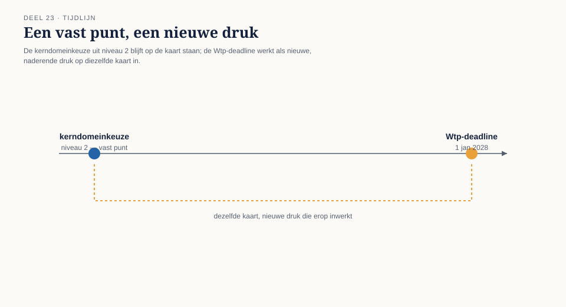
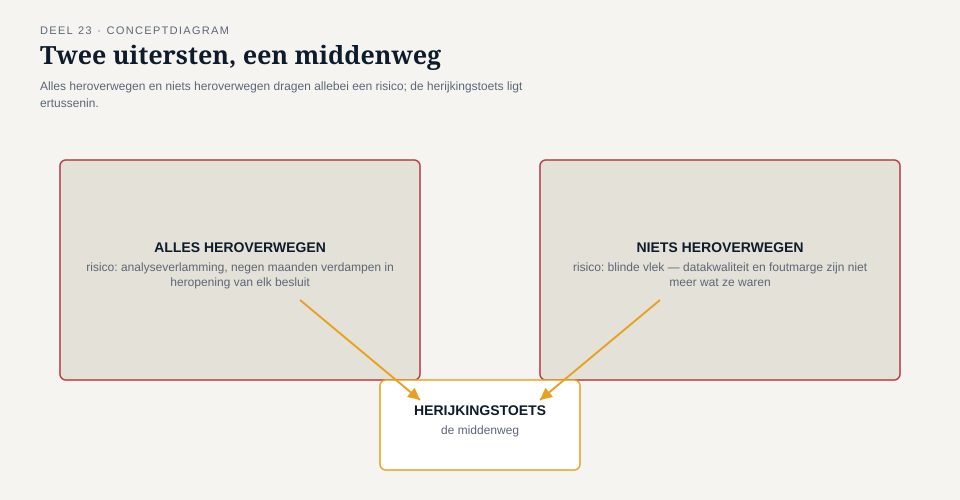
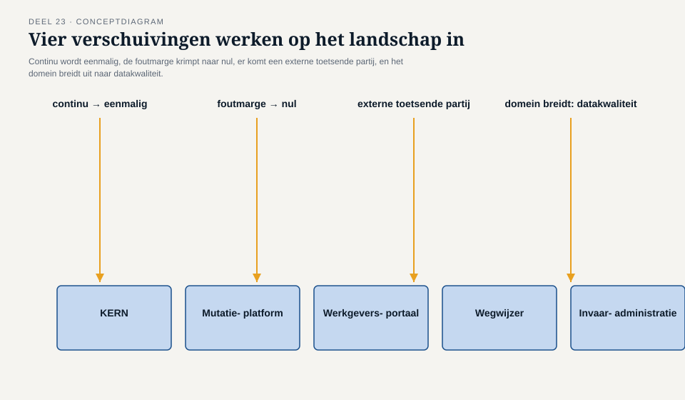
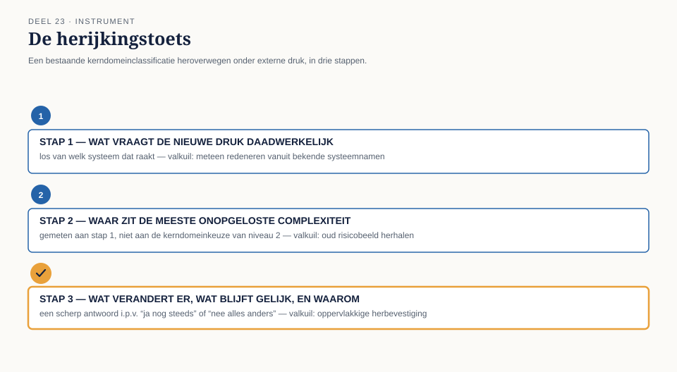

Deel 23 — Strategisch herontwerp op stelselschaal: het kerndomein heroverwegen onder de Wtp-transitie
Reader · Ductus-cursus Domain-Driven Design · niveau 3 (expert) · deel 23 van 30 — opening van niveau 3
23.1 Waar dit deel over gaat
Dit deel opent niveau 3. Je hebt er niveau 1 (het Nabestaandenloket) en niveau 2 (de contextmap van het complete Meridiaan-landschap) niet voor nodig — waar ernaar wordt verwezen, staat er genoeg bij om zonder die niveaus mee te kunnen. Wat je wel nodig hebt, is het besef dat een kerndomeinkeuze geen eenmalige beslissing is die je ergens vroeg in een project vastlegt en daarna vergeet. Het is een uitspraak over waar op dit moment de meeste investering, de scherpste mensen en de meeste aandacht naartoe moeten — en dat “op dit moment” is precies waar dit deel om draait.
Ergens in niveau 2 heeft een team van Meridiaan Pensioen, met Daan Kuiper als domeinmodelleur, het complete applicatielandschap in kaart gebracht: vijf systemen, een kerndomeinkeuze, zeven context-mappingpatronen. Het Mutatieplatform kwam daar naar voren als kerndomein — het onderdeel waar de meeste investering naartoe moest, omdat het de plek was waar de meeste onopgeloste complexiteit zat.
Dat werk ligt nu, aan het begin van niveau 3, negen maanden vóór een deadline die niet verschuift: 1 januari 2028, de datum waarop de Wet toekomst pensioenen (Wtp) Meridiaan dwingt over te zijn op het nieuwe pensioenstelsel. Wat dit deel behandelt, is een vraag die niveau 2 nog niet hoefde te stellen: verandert een organisatiebrede, onomkeerbare operatie wélk deel van het landschap je kerndomein noemt — en zo ja, ben je bereid die eerdere keuze hardop te herzien, ook al heeft een heel team er negen maanden aan gewerkt?
Aan het eind van dit deel kun je:
- uitleggen waarom een kerndomeinkeuze een uitspraak over een moment is, geen permanente eigenschap van een systeem;
- vaststellen wanneer een externe druk (een deadline, een regelgevende eis, een reorganisatie) een eerdere kerndomeinkeuze ondermijnt, en dat onderscheiden van een druk die de eerdere keuze juist bevestigt;
- een heroverweging van het kerndomein onderbouwen zonder in een van twee valkuilen te vallen: alles heroverwegen omdat er iets verandert, of niets heroverwegen omdat de vorige keuze veel werk heeft gekost;
- met de herijkingstoets een kerndomeinheroverweging op stelselschaal uitvoeren en verantwoorden.
23.2 De casus: het bericht van Iris
Uit het casusdossier: niveau 2 sloot af met de voltooide context map van het Meridiaan-landschap. Iris Tanghe, toen programmadirecteur van het Programma Mutatieplatform, is inmiddels programmadirecteur voor de volledige Stelselovergang.
Daan Kuiper krijgt, vier weken na de start van het transitieprogramma, een agendapunt van Iris waar geen inhoud bij staat: “kerndomein — heroverwegen?” Als hij haar erover spreekt, is haar antwoord kort. “Het bestuur wil weten of we, met alles wat we de komende negen maanden moeten doen, nog steeds onze beste mensen op het Mutatieplatform hebben staan. Ik weet het antwoord niet. Jij hebt de contextmap gemaakt — vertel me of die nog klopt.”
Daan is, in eerste instantie, geneigd de vraag als een formaliteit te behandelen. “We hebben negen maanden aan die kaart gewerkt. Het Mutatieplatform is het systeem waar de meeste onopgeloste complexiteit zat — dat verandert niet omdat er een deadline bij komt.”
Iris laat de opmerking niet onweersproken. “Het Mutatieplatform was het systeem met de meeste onopgeloste complexiteit toen het doel was: dagelijkse mutaties correct en traceerbaar verwerken. Is dat nog steeds het doel dat het meest bepaalt waar onze beste mensen moeten zitten, of is dat inmiddels: één keer, foutloos, een miljoen deelnemers invaren? Dat zijn niet automatisch dezelfde vraag, en ik wil niet dat we negen maanden bouwen op een aanname die we nooit opnieuw hebben getoetst.”
Daan herkent, wanneer hij er later met Foppe over spreekt, iets van zijn eigen aarzeling uit niveau 1 — toen hij nog moest leren dat “we hebben er al aan gewerkt” geen argument is voor “het is dus nog steeds juist.” Foppe formuleert het scherper: “Een kerndomeinkeuze die je nooit opnieuw durft te bevragen, is geen strategische keuze meer. Het is een gewoonte die toevallig ooit een keuze was.”

23.3 Waarom een kerndomeinkeuze een uitspraak over een moment is
Evans introduceerde het onderscheid tussen kerndomein, ondersteunend subdomein en generiek subdomein als een manier om investering te richten: niet elk deel van een systeem verdient evenveel aandacht, en de plekken waar het bedrijf zich werkelijk onderscheidt — of waar de risico’s het grootst zijn als het misgaat — verdienen de beste mensen en de meeste zorgvuldigheid. Wat in de eerste kennismaking met dat onderscheid (in deze cursus: niveau 2, deel 12) licht onderbelicht kan blijven, is dat de classificatie afhangt van wát het bedrijf op dat moment probeert te bereiken. Verander het doel, en de classificatie kan meeveranderen — niet omdat het model fout was, maar omdat de vraag die het model moest beantwoorden, is veranderd.
Bij Meridiaan was de vraag in niveau 2: welk deel van het landschap moet de dagelijkse mutatieketen — indiensttreding, salariswijziging, overlijden — betrouwbaar en traceerbaar laten verlopen? Het antwoord was het Mutatieplatform, en dat antwoord was juist voor die vraag.
De vraag die de Stelselovergang stelt, is een andere: welk deel van het landschap bepaalt of Meridiaan één keer, binnen een vaste termijn, een onomkeerbare, foutgevoelige operatie foutloos kan uitvoeren voor meer dan een miljoen deelnemers? Dat is niet noodzakelijk hetzelfde systeem — en het team moet de heroverweging uitvoeren zonder vooraf aan te nemen dat het antwoord hetzelfde blijft, én zonder aan te nemen dat het antwoord per se verandert. Beide aannames zijn een manier om de eigenlijke vraag te ontwijken.
Twee valkuilen
Alles heroverwegen omdat er iets verandert. Sommige teams reageren op elke externe druk met een volledige herstart van de strategische analyse — inclusief de delen van het landschap die door de nieuwe druk helemaal niet worden geraakt. Dat is niet zorgvuldigheid, het is een gebrek aan onderscheidingsvermogen: het kost tijd die bij een deadline als 1 januari 2028 nergens vandaan komt, en het verwatert de aandacht juist op het moment dat scherpte het meest nodig is.
Niets heroverwegen omdat de vorige keuze veel werk heeft gekost. De omgekeerde valkuil, en in de praktijk vaker de sluipende — herkenbaar aan een zin als Daans eerste reactie op Iris: “we hebben er negen maanden aan gewerkt.” Investering in een eerdere keuze is geen argument voor de juistheid van die keuze onder een nieuwe vraag. Het is precies het soort redenering dat DDD als discipline probeert te doorbreken: het model moet passen bij wat het domein nu vraagt, niet bij wat het ooit heeft gekost om het model te maken.
De herijkingstoets, uitgewerkt in §23.5, is bedoeld om tussen deze twee valkuilen door te navigeren: gericht heroverwegen, op basis van een expliciete vraag naar wát er is veranderd, niet op basis van gevoel.

23.4 Wat er bij de Stelselovergang concreet verandert
Voordat het team met de heroverweging zelf kan beginnen, moet het scherp krijgen wát er nu eigenlijk anders is dan in niveau 2 — niet in algemene termen (“het is nu belangrijker”), maar in termen die een kerndomeinclassificatie daadwerkelijk raken.
Het doel verschuift van continu naar eenmalig. De mutatieketen die het Mutatieplatform bedient, is een doorlopend proces: elke dag komen er mutaties binnen, elke dag worden er verwerkt, en een fout van vandaag kan morgen worden gecorrigeerd. Het invaren is het tegenovergestelde: één bewerking, op een vaste datum, waarna een fout niet meer gratis te herstellen is. Dat vraagt een ander soort zorgvuldigheid dan een systeem dat is ontworpen om dagelijks, herhaald, betrouwbaar te draaien.
De foutmarge krimpt naar nul op één specifiek moment. Het Mutatieplatform is, terecht, gebouwd met een zekere tolerantie voor foutdetectie-en-correctie achteraf — een mutatie die verkeerd binnenkomt, wordt gesignaleerd en hersteld voordat hij onherstelbare schade aanricht. Bij het invaren zelf bestaat dat vangnet niet: de omzetting van een aanspraak is, op het moment dat hij plaatsvindt, definitief.
Er komt een externe partij bij die eerder ontbrak. Niveau 2 kende geen toezichthouder die het resultaat van de contextmap-oefening zou toetsen. De Stelselovergang wel: DNB beoordeelt het implementatieplan, met een wettelijk verplicht onderdeel over datakwaliteitsborging. Een deel van het landschap dat tot nu toe intern kon verantwoorden waarom het “goed genoeg” was, moet dat nu extern, aantoonbaar, kunnen.
Het domein zelf breidt uit. Wat in niveau 2 nog geen deel van de scope was — de datakwaliteit van decennia aan historische mutaties, de correctheid van de authentieke registratie in KERN voorafgaand aan het invaren — wordt nu onderdeel van wat het team moet kunnen verantwoorden. KERN, dat in niveau 2 een gegeven, min of meer stabiel gegeven was waar het Mutatieplatform tegenaan bouwde, staat in dit deel voor het eerst zelf ter discussie.
Deze vier verschuivingen samen zijn de reden waarom de heroverweging niet oppervlakkig kan blijven bij “hetzelfde landschap, nu met een deadline erbij.” Ze raken precies aan wat een kerndomeinclassificatie bepaalt: waar zit de meeste onopgeloste complexiteit, gegeven wat het bedrijf nu probeert te bereiken.

23.5 De herijkingstoets
De herijkingstoets is het instrument van dit deel: een gestructureerde manier om een bestaande kerndomeinclassificatie te heroverwegen onder een externe druk, zonder in een van de twee valkuilen uit §23.3 te vallen. Ze bestaat uit drie stappen, telkens toegepast per onderdeel van het landschap.
Stap 1 — Wat vraagt de nieuwe druk daadwerkelijk?
Formuleer, voordat je naar het landschap kijkt, expliciet wat de nieuwe druk (hier: de Stelselovergang) van de organisatie vraagt, los van welk systeem dat raakt. Voor Meridiaan: eenmalig, foutloos, binnen een vaste termijn, aantoonbaar voor een externe toezichthouder, een miljoen deelnemersaanspraken correct omzetten. Deze stap dwingt het team het doel te formuleren vóórdat het naar de bekende systeemnamen kijkt — anders is de verleiding groot om meteen te redeneren vanuit “dit systeem is toch al belangrijk” in plaats van vanuit wat er werkelijk nodig is.
Stap 2 — Waar zit, gegeven die vraag, de meeste onopgeloste complexiteit?
Loop het landschap opnieuw langs, maar nu met de vraag uit stap 1 als maatstaf, niet met de kerndomeinkeuze uit niveau 2 als uitgangspunt. Voor elk onderdeel: als dit onderdeel faalt in het licht van déze vraag, hoe ernstig en hoe onomkeerbaar is dat falen? Een onderdeel dat bij de dagelijkse mutatieketen een acceptabel risico droeg, kan bij het invaren een onacceptabel risico dragen — en omgekeerd kan een onderdeel dat in niveau 2 weinig aandacht kreeg (zoals de datakwaliteit van historische KERN-dossiers) hier het zwaarste risico blijken te dragen.
Stap 3 — Wat verandert er concreet aan waar de investering naartoe gaat, en wat blijft gelijk?
Formuleer, na stap 1 en 2, expliciet welk deel van de kerndomeinclassificatie uit niveau 2 overeind blijft, welk deel verschuift, en — dit is het onderdeel dat een herijking onderscheidt van een oppervlakkige herbevestiging — waaróm. “Het Mutatieplatform blijft kerndomein, en daar komt de datakwaliteitsborging van KERN als tweede, tijdelijk kerndomein bovenop” is een ander, scherper antwoord dan “ja, nog steeds het Mutatieplatform” of “nee, nu is alles anders.”
De herijkingstoets levert, net als de complexiteitstoets uit deel 1 waarmee de cursus opende, geen score op maar een verantwoorde uitspraak: dít blijft zoals het was, om déze reden; dít verschuift, om déze reden. Precies de vorm die dit hele niveau, tot en met de masterproef in deel 30, van de deelnemer blijft vragen.

23.6 Terug naar de casus
Het team — Daan, Vera Almeida (architect van KERN), Karsten Rooijakker (Werkgeversportaal), Otto Feenstra (developer op het Mutatieplatform) en Foppe als begeleider — doorloopt de herijkingstoets over twee sessies.
Bij stap 1 formuleert het team het doel scherp: eenmalig, foutloos, binnen een vaste termijn, aantoonbaar bij DNB. Vera merkt meteen op dat dit een heel ander soort eis is dan “dagelijks werkt het goed genoeg”: “Bij de mutatieketen kunnen we een fout morgen herstellen. Bij het invaren hebben we die morgen niet.”
Bij stap 2 gebeurt wat Iris had voorzien zonder het zelf al te kunnen benoemen. Het Mutatieplatform blijft, ook onder de nieuwe vraag, een plek met veel onopgeloste complexiteit — de mutatieketen moet foutloos blijven werken tot en tijdens de transitie. Maar KERN, dat in niveau 2 vooral als stabiele, gegeven bron gold, blijkt bij nader onderzoek de plek waar het grootste, minst onderzochte risico zit: decennia aan historische mutaties, deels handmatig ingevoerd, nooit systematisch getoetst op de datakwaliteitseis die het implementatieplan nu wettelijk verplicht stelt. Vera formuleert het zelf het scherpst: “Wij hebben in niveau 2 KERN behandeld als het systeem waar de andere systemen zich naar moesten voegen. Onder déze vraag is KERN het systeem met het grootste onbekende risico — en dat hebben we nooit apart onderzocht, omdat het nooit apart hoefde.”
Bij stap 3 formuleert Daan, met het team, de herijkte uitspraak: het Mutatieplatform blijft kerndomein voor de doorlopende mutatieketen. KERN’s historische datakwaliteit wordt, voor de duur van de transitie, een tweede, tijdelijk kerndomein — niet omdat KERN als systeem is veranderd, maar omdat de vraag die het moet beantwoorden (níet: “werkt het dagelijks goed genoeg”, wél: “kunnen we aantonen dat elke historische dossier correct genoeg is om in te varen”) nieuw is en zwaar weegt.
Otto, die bij aanvang van de sessie het meest ongeduldig was (“kunnen we niet gewoon zeggen dat het Mutatieplatform kerndomein blijft en verdergaan?”), erkent aan het eind zelf het verschil: “Als we dit niet hadden gedaan, hadden we negen maanden lang de beste mensen op het Mutatieplatform gehouden en de KERN-datakwaliteit als bijzaak behandeld — precies tot het moment dat DNB ernaar vraagt en we geen antwoord hebben.”
Iris, wanneer Daan haar het resultaat presenteert, stelt één vraag: “Als jullie dit over vier maanden nog een keer zouden doen, verwachten jullie dan hetzelfde antwoord?” Daans antwoord is het antwoord dat de rest van dit niveau blijft terugkomen: “Nee — niet automatisch. Dat is precies waarom we dit niet één keer doen en dan vergeten.”
23.7 Vooruitblik
Dit deel heeft het kerndomein van het Meridiaan-landschap heroverwogen onder de druk van de Stelselovergang zelf — een druk die van binnenuit komt, uit de eigen organisatie en haar eigen regelgevende verplichtingen. De rest van niveau 3 bouwt hierop voort in twee richtingen.
Eerst naar binnen: deel 24 pakt de tweede kerndomeinuitspraak van dit deel — de datakwaliteit van KERN — concreet op met een saneringsstrategie voor de oudste, minst doorzichtige lagen van dat systeem. Deel 25 behandelt de consistentie-eisen van de daadwerkelijke invaaroperatie. Deel 26 behandelt hoe je een domeinmodel dat door meerdere teams wordt gedragen, tegen taal-drift bewaakt over de tijd.
Daarna naar buiten: aan het eind van deel 26 meldt het bestuur een ontwikkeling die niets met KERN of de mutatieketen te maken heeft, maar die dezelfde discipline — weten waar de meeste onopgeloste complexiteit zit, en dat hardop durven zeggen, ook als het ongemakkelijk is — op de proef gaat stellen op een schaal die dit deel nog niet kende: Meridiaan neemt een klein, zelfstandig pensioenfonds over, met een eigen deelnemersmodel dat op een aantal punten onverenigbaar is met dat van Meridiaan. De herijkingstoets uit dit deel keert in dat vraagstuk terug — niet om te bepalen welk systeem kerndomein is, maar om te bepalen of, en hoe, twee modellen van twee verschillende organisaties één landschap kunnen delen. Dat vraagstuk draagt de rest van niveau 3, tot en met de masterproef in deel 30.